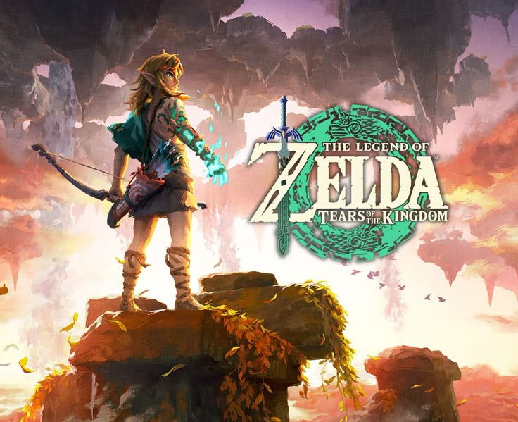
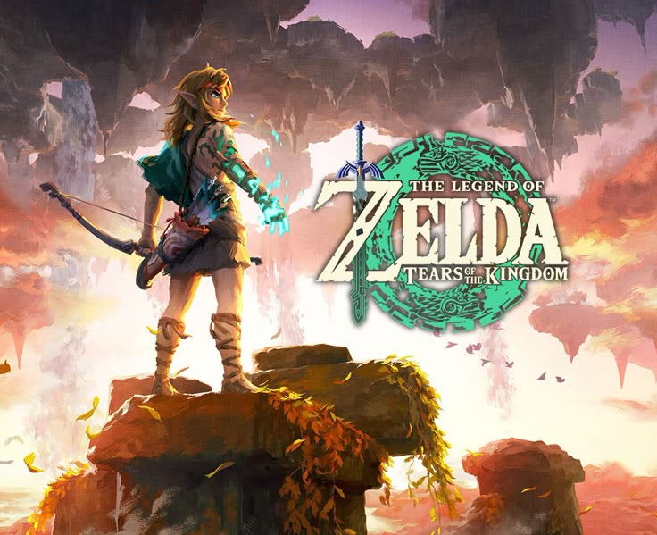

About
Hi! My name is Anthony and I am a student working as a barista. I was born and raised in the central valley, specifically in Visalia, CA. I am studying Computer Science at CSUC (California State University Chico) and will be transfering from COS (College of the Sequoias) in Fall 2025. Languages I've coded in include Java, HTML, and C++. I also attended a Computer Science Camp offered by CSUC. My goal is to develop my coding skills and solve complex problems with complex solutions. I hope you enjoy what this small portfolio has to offer.
 

Hobbies / Interests
My hobbies include gaming, taking walks, biking, reading, listening to music, and ocasionally drawing. These are some of my favorite games that I enjoy playing on my off time.